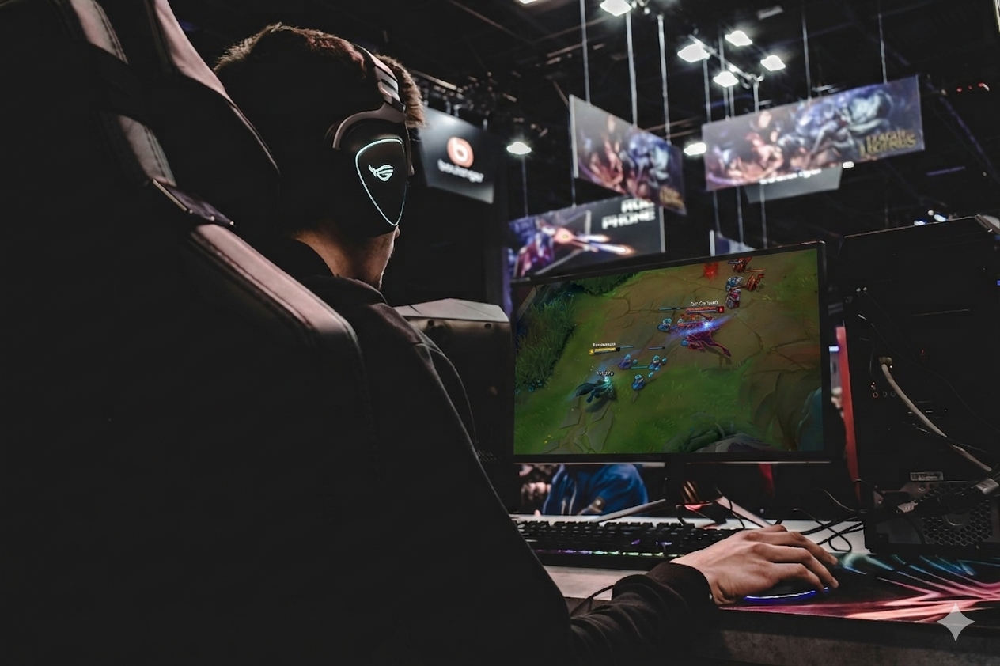

Bem-vindo ao site de Itens do LOL
Um guia simples para ajudar os noobs a dar gap de warwick como o Josué.
Com nossos excelentes professores você irá para o elo ferro em pouco tempo. Não se preocupe com o conteúdo, ele é tão ruim quanto o professor, então você não vai perder nada.
Na imagem ao lado podemos ver o professor jogando seu mundial com seu WW. Ele com certeza é um dos piores jogadores do mundo, então se ele consegue chegar lá, você também consegue!

Aprenda a jogar melhor
Com nossos guias e dicas, você pode aprender a jogar melhor e se divertir mais no League of Legends.
Não perca tempo, comece agora mesmo!